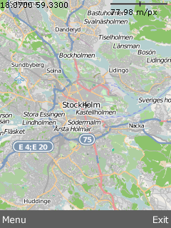
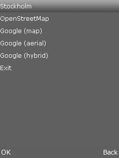
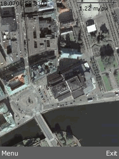

The MapDemo application displays slippy maps and makes use of the MAUI library to provide a simple menu system. The menu system enables the user to switch between map sources and is easy to extend with your own code.
|  |  |
|  |
This example is included in the MoSync SDK installation in the /examples folder. For information on importing the examples into your workspace, see Importing the Examples.
When started, the application displays a map centered on Stockholm (longitude/latitude 18.07, 59.33) with a medium level of magnification. The initial map source is OpenStreetMap. Clicking the left-softkey brings up the menu system. This application uses the Moblet framework.